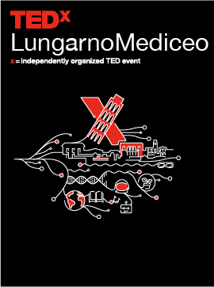

From 2021 to 2023, I took part in three editions of TEDxLungarnoMediceo (now TEDxPisa), working
as Art Director, graphic designer, photographer, and web developer. I also contributed to the
video for Marco Calanca (aka Becko) titled “Crea”, handling the artwork, and coordinated the
talks of both Becko and Matteo “ESSEHO” Montalesi, a pop singer-songwriter and producer. The key
visual is simple and direct: the X, half-formed by the Leaning Tower of Pisa, is still used by
the team today.